The Departure Hall + the first jump's opening scene
Session 61, 2026-09-29 (docs/196). Renders are Blender previews of the actual emitted map brushes, the shipped teleporter mesh and the map's own lights as stand-ins, under the game's sky — previews, not native bakes. The sky shown is session 22's new title sign after the −90° roll. Built in one combined full build (2026-09-29 11:49).
First play (13:00): the scene works, but in game the sign was not in the shot. The engine's own sky shader shows the image's centre faces east, not north, so the −90° roll put the sign behind the crown. The fix (session 22's new render at roll 0, plus the sky material turned 180°) puts it due west, exactly as these previews show. It rides the next full build (docs/196 §3).
Before → after
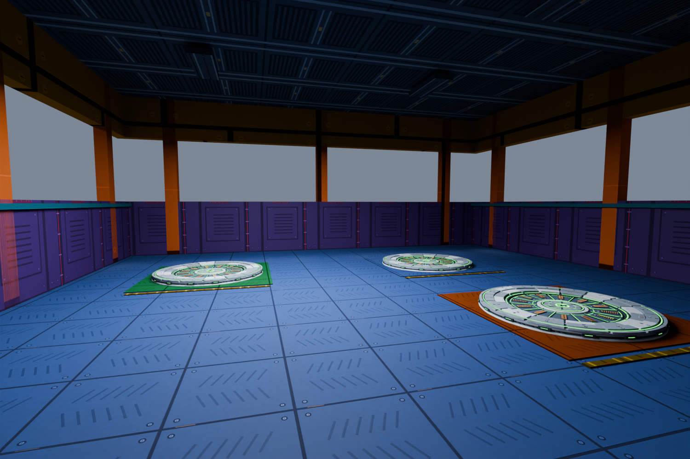
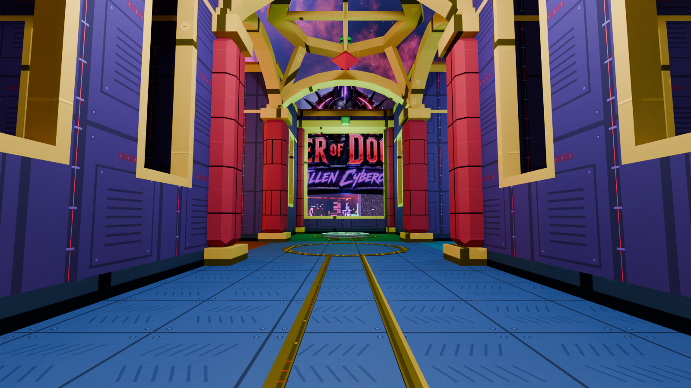
The hall
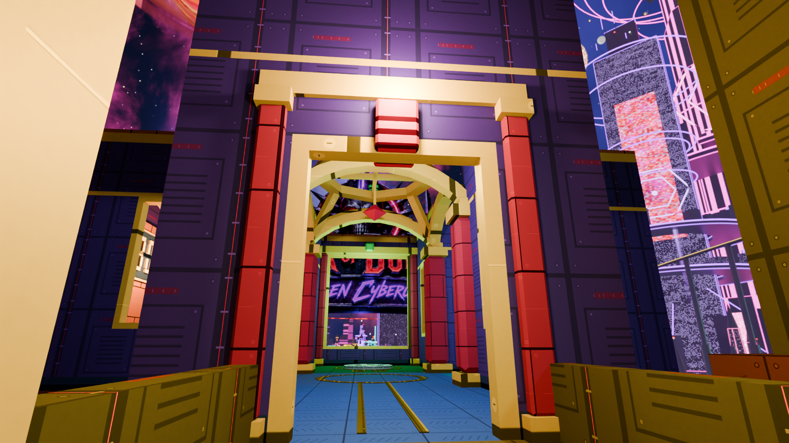
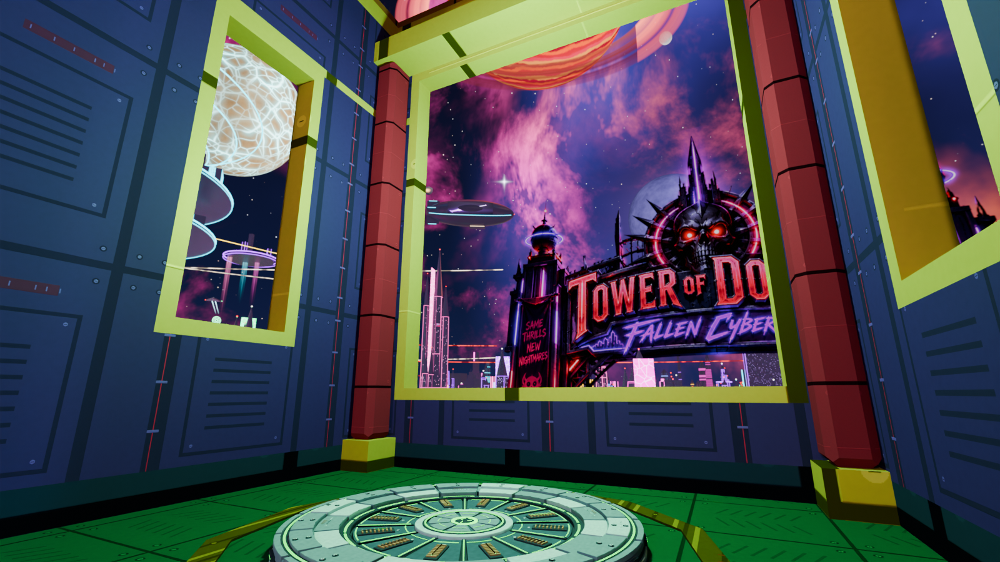
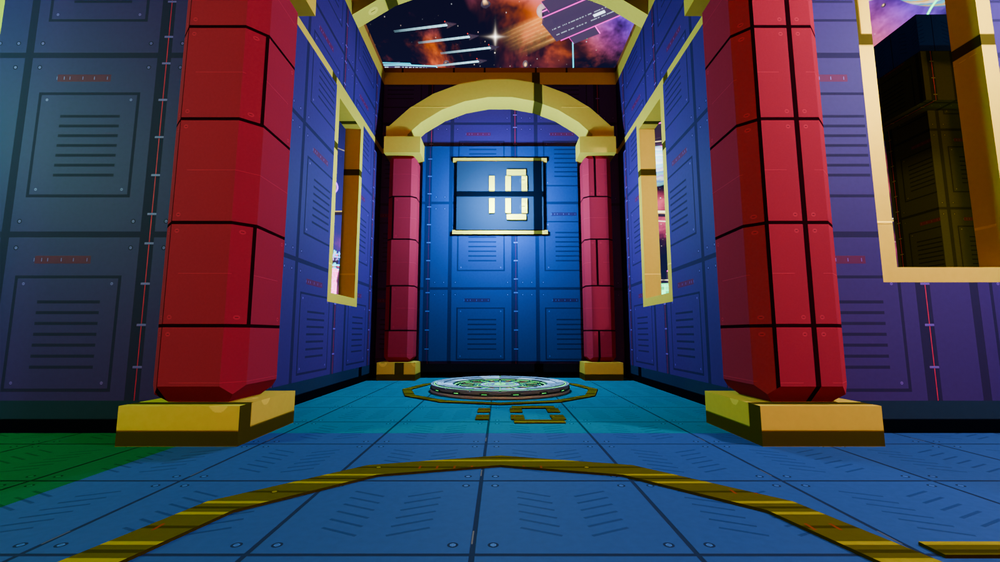
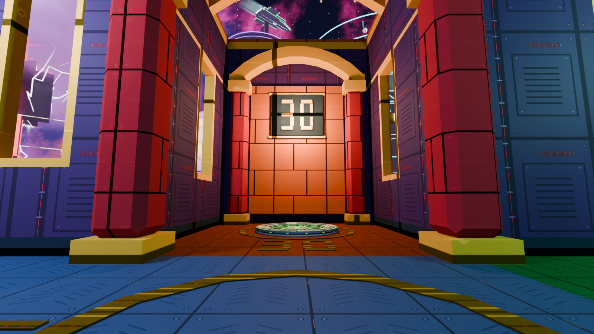
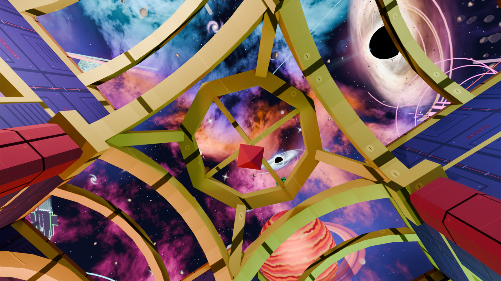
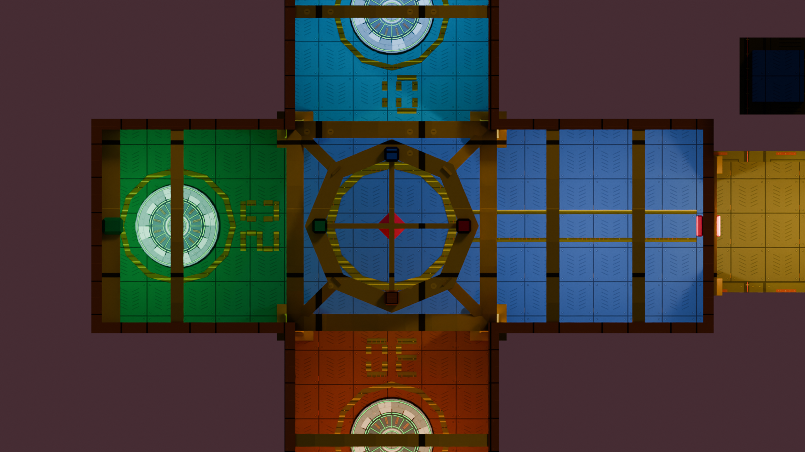
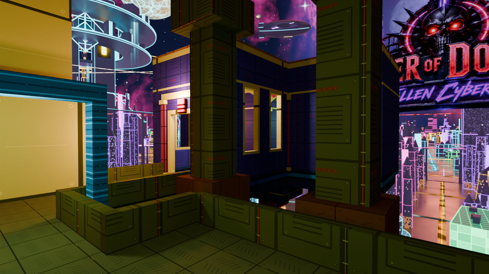
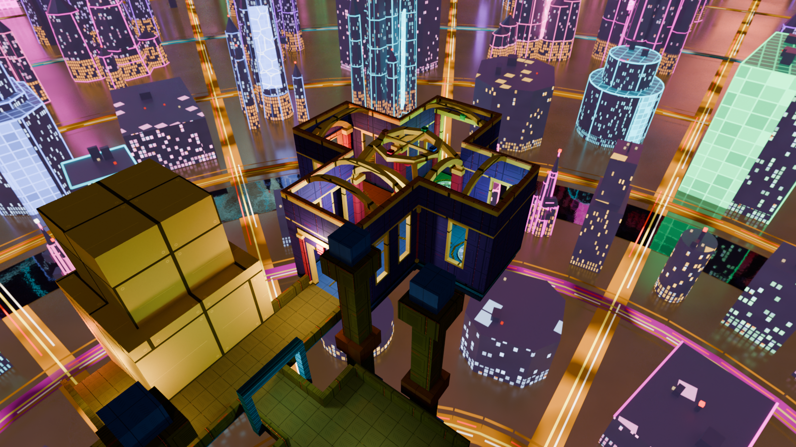
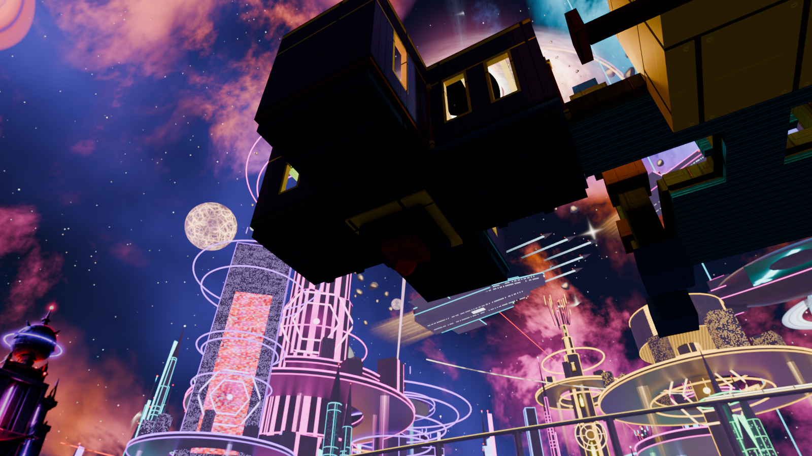
The opening scene (each player's first jump)
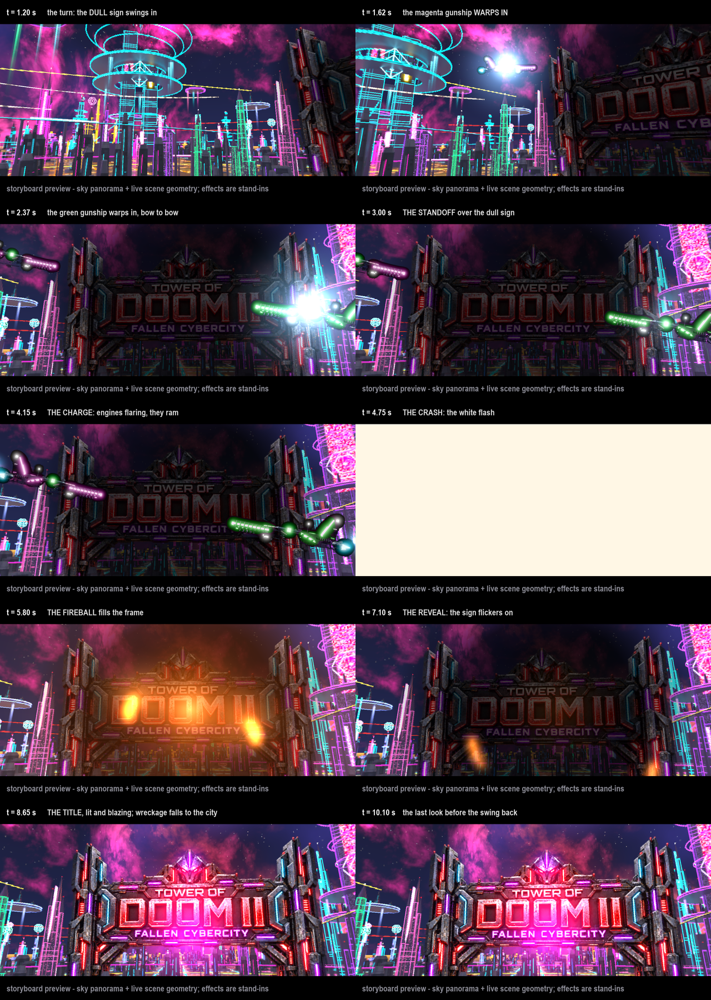
python tools/jump_title/render_storyboard.py). The sky is the finished panorama seen through the engine's decoded sky mapping. The camera and the ships come from the live scene: the gunship is session 9c's own render, laid on each ship's projected path. The blaze is painted from the effect's own table. The warp, the burn, the white-out, the fireball and the wreckage are painted stand-ins. It shows where everything is and when; how the effects look is the playtest's.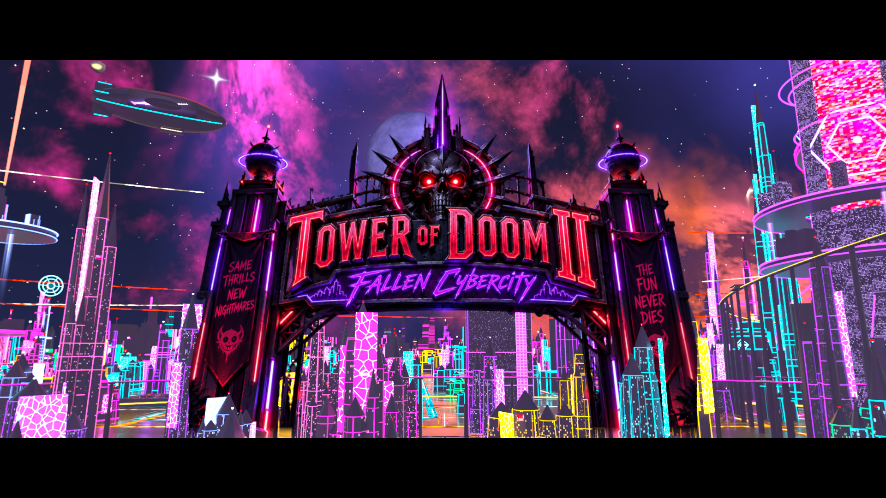
| time | what happens |
|---|---|
| 0.0 s | Launch. The letterbox closes, the HUD hides, the gun goes down, the wind rushes in. Dark smoke gathers over the sky sign (out of view). |
| 0.7 s | The camera turns right, smoothly, to the sign (stock view-clamp lerp, never a snap). |
| 1.5 s | The magenta gunship WARPS IN beside the dimmed sign: a portal flash, a deep bamf. |
| 2.25 s | The green gunship warps in on the other side, bow to bow. |
| 2.7 s | Engines flare white-hot; they ram each other. |
| 3.9 s | THE CRASH: the screen burns white, the fireball fills the frame, the shot shakes, the boom and its rumble. |
| 4.1 s | Behind the white, the sign ignites: a power surge, the title ablaze. |
| ~5.5 s | The white clears through fire: TOWER OF DOOM II blazing, reactor blasts, wreckage falling to the city, 9c's fighter salute. |
| 7.3 s | The swing back down to the tower; the blaze fades as the sign leaves the frame. |
| 9.1 s | Control returns: free look, bars open, HUD back, the gun comes up. |
| 11.0 s | A soft landing on the terrace. |
Every later jump: 7 s with the same float and soft landing, free look throughout. A card deal mid-scene ends it at once (the ships and the effects go with it).